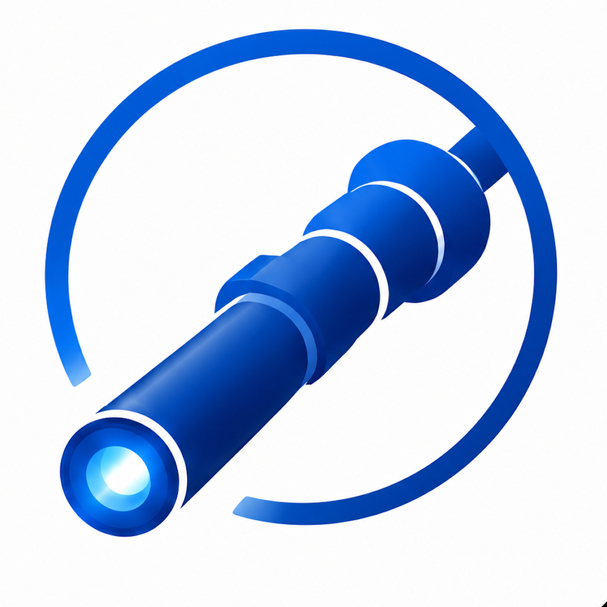

LIVE
Endoscope Checker
A mobile tool designed to support quality checks of endoscopic equipment and help users identify potential issues before use.
INDEPENDENT SOFTWARE DEVELOPMENT · GEORGIA, USA
I develop mobile and web applications focused on solving practical workflow challenges, with particular interest in Sterile Processing and healthcare operations.
Built from experience. Designed for the people who do the work.

A focused approach
The goal is simple: understand real workflow challenges, build useful tools, and keep the experience practical for the people who use them every day.
ABOUT
My background is in software quality assurance, with more than 10 years of experience testing mobile and web applications, building automated tests, working with APIs, and helping develop reliable software products.
That experience has shaped how I approach application development: understand the real-world problem, keep the user experience practical, and build software that is useful in the environment where it will actually be used.
Today, I apply that experience to developing my own mobile and web applications, with a particular focus on specialized healthcare workflows.
PRODUCTS
Two applications are currently available outside the development environment.
A mobile tool designed to support quality checks of endoscopic equipment and help users identify potential issues before use.
A workflow-support application designed to help Sterile Processing teams organize and streamline preparation for upcoming cases.
New products will be introduced as they become ready for testing and external use.
EXPERIENCE
More than 10 years of professional experience in mobile and web application quality assurance.
Manual testing, test planning, test cases, regression testing, and usability testing.
Appium, Selenium, Robot Framework, Gherkin, Python, Ruby, and Jenkins.
API validation and testing using Postman.
Applying a QA-oriented approach to designing, developing, testing, and improving independent software products.
GET INVOLVED
Feedback from people who understand real healthcare workflows is an important part of developing useful products.
Interested in trying an application and providing practical feedback as it develops?
Become a tester →Interested in exploring what is currently available and discussing whether a tool could fit your department?
Start a conversation →Interested in supporting practical healthcare technology developed close to real-world workflows?
Start a conversation →I'd like to hear about practical challenges where thoughtful software could make a difference.
Tell me about it →BUILT FROM EXPERIENCE
Based in Georgia, USA, I welcome conversations with hospitals, healthcare professionals, technology partners, and investors in the United States and around the world.
The goal is simple: understand real problems, build practical solutions, and learn directly from the people who do the work.
GET IN TOUCH
Use the contact form to discuss a product, arrange a demonstration, apply as a tester, explore a hospital opportunity, or start a conversation about partnership or investment.